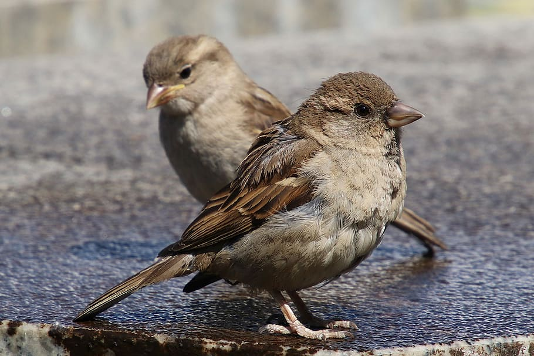
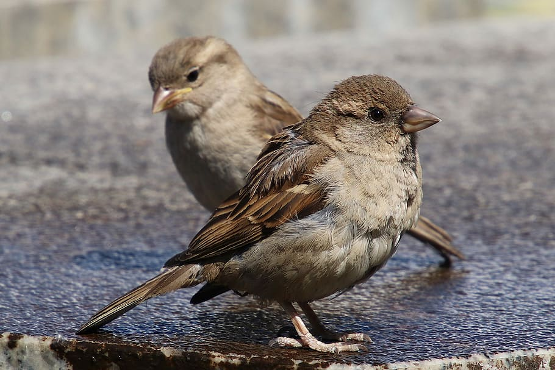
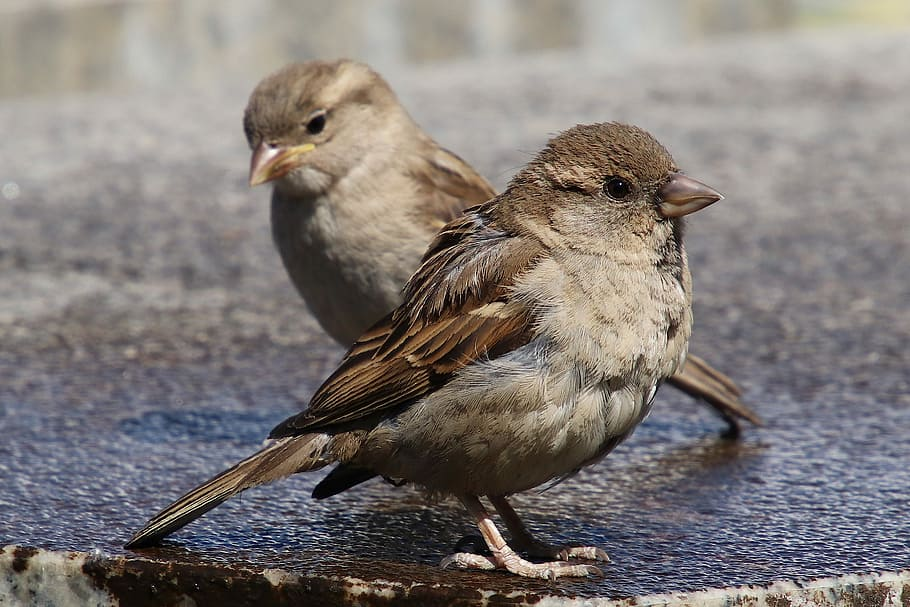

|

|
Species that are on the verge of extinction due to their decreasing population on account of environment or
predatory
factors
are refered to as Endangered!!🐦🐥
Birds, our chirpy feathered friends, who have amazed us by their aerodynamics and exotic colors, are under great
threat.
There are 9,934 species of birds that are existing in the world today, out of which, a staggering 1,313(13%)
are threatened under existction. House Sparrow is one of them.
Sparrows, though tiny, are very sensitive and strongly immune birds, and their sudden disappearance as
sentinels or as
ecological indicators is a warning to humans about impending environmental hazards.